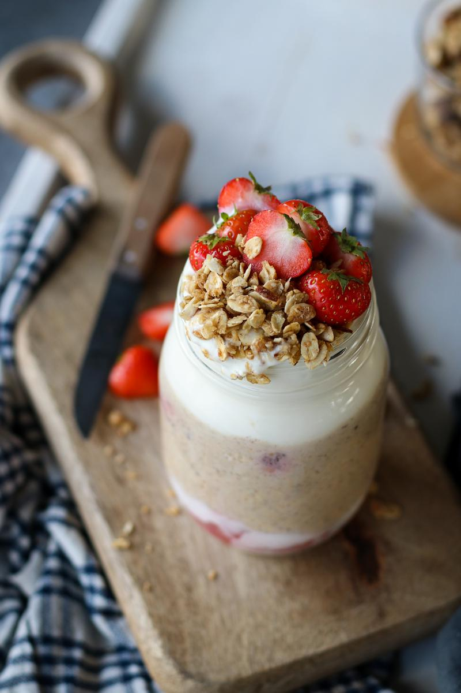
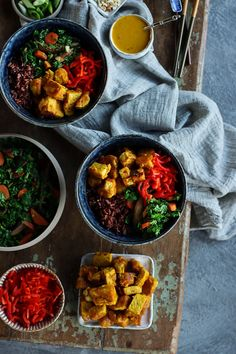

Ovăz cu căpsuni
30min
Ușor
30
Ingrediente
-
50gcăpsuni înghețate
-
40gfulgi de ovăz
-
120mllapte
Instrucțiuni
- In a small bowl, microwave the strawberries on high for 1 - 2 minutes. Mash the thawed strawberries with a fork, and let sit to cool slightly. Alternatively, the strawberries can be thawed on the stove. Note, if using fresh berries (as pictured), it's best to mash it, and then mix it together with some yogurt to retain the freshness of the berries.
- In a medium bowl, combine the oats, plant milk, cashew butter, lemon juice, maple syrup, flaxseeds and vanilla extract. If desired, you can add some chopped fresh or frozen strawberries into the oat mixture as well, although optional.
- Add the thawed berry mixture to the bottom of a mason jar or airtight container, then add the oat mixture on top of that.
- Seal the container, and let it sit overnight in the fridge.
- The next morning, top with yogurt and other desired toppings, and enjoy!
Comentarii
Michell Gonzalez
